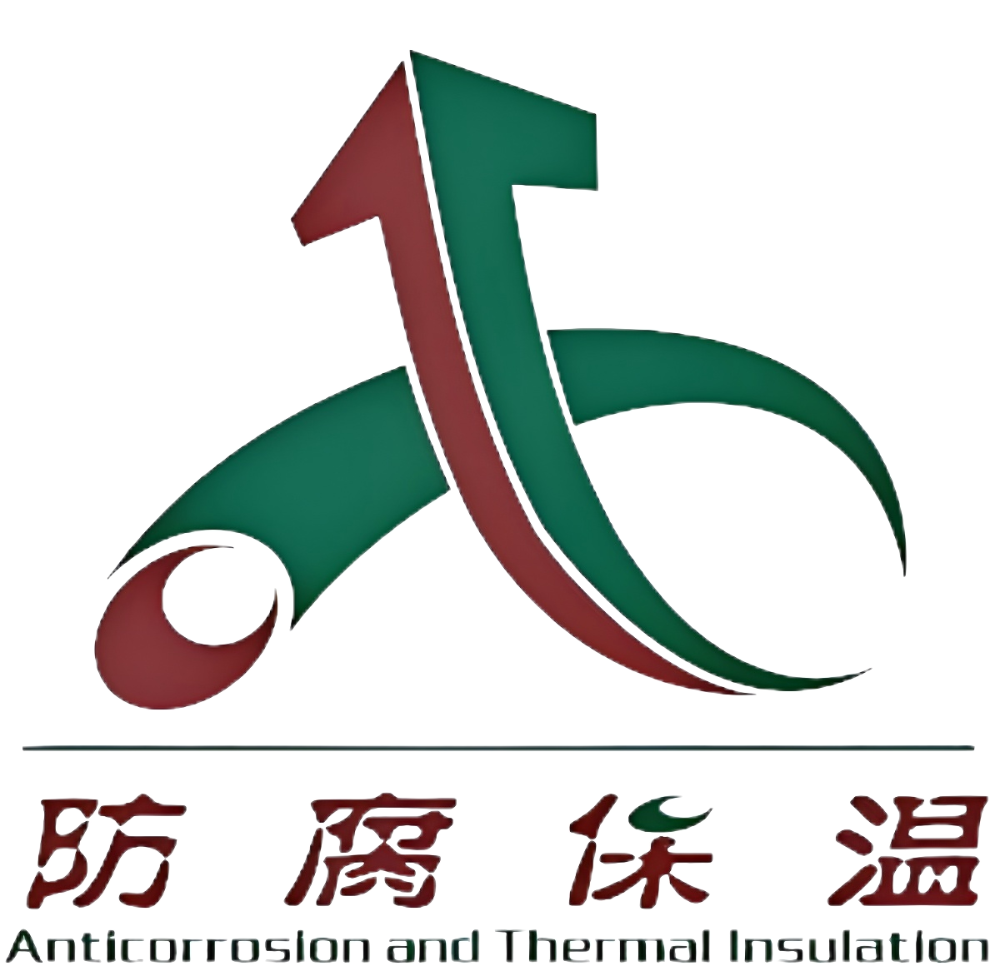

滨海第三代核电站电气厂房位于华东沿海IV类抗震设防区，属核电站B类抗震建筑物，承担全厂电力分配与安全级仪控系统核心功能。厂房主体为现浇混凝土筏板基础+装配式混凝土框架结构，地下1层（局部区域深基坑达12m），地上3层，总建筑面积1.8万㎡，层高7.2m-10.5m。上部结构采用标准化框架体系，柱网尺寸8.4m×10.8m，最大单跨24m，楼面活荷载设计值达16kN/㎡以满足重型电气设备承载需求。该工程面临三重核心挑战：其一，核安全法规要求结构服役期内承受SL-2级地震（0.3g PGA）及事故工况荷载组合；其二，厂房内密集布置安全级电气贯穿件（总计152处）、母线通道及设备基座，预埋件定位公差需≤±3mm；其三，作为核岛关键路径工程，主体结构工期仅允许12个月，较常规工期压缩30%。针对上述难点，项目团队确立“设计-生产-施工全链条精密控制”的技术路线（图2-1）。设计阶段依托BIM协同平台构建LOD 400精度模型，将结构系统拆分为4类标准化预制构件：600mm×600mm/700mm×700mm预制柱（单件最重18t）、24m跨度预应力双T板（肋高800mm）、C50级预制框架梁（倒T形截面）、280mm厚夹心保温外墙板（岩棉芯材）。预制构件总体积占上部结构25%，关键节点采用“现浇核心区+高强连接”混合体系：框架柱底应用M56套筒灌浆连接（灌浆料85MPa级），梁柱节点区现浇C60微膨胀混凝土，双T板端部通过预埋钢板与钢托架焊接固定。该技术路线以三项创新为支柱：基于BIM的冲突预消解机制（实现152处安全级预埋件零碰撞）、核级质保体系下的构件公差控制（截面尺寸偏差±2mm）、毫米级安装工艺（全站仪实时纠偏系统）。施工组织采用“四阶并行”模式：第一阶段同步推进基础施工与构件工厂化生产，通过数字化预拼装验证设计合理性；第二阶段采用350t履带吊实施大型构件吊装，每日完成8-10个吊次，柱垂直度通过激光测距仪与可调斜撑双控至≤1/1000；第三阶段进行套筒灌浆与节点区浇筑，灌浆料流动度初始值≥300mm、30min保留值≥260mm，采用压力-流量双控灌浆机保障饱满度；第四阶段集成机电预埋与装饰面层施工。全过程设置21项质量控制停检点（H点/W点），重点监控套筒灌浆密实度（内窥镜抽查率15%）、节点区混凝土温升（≤65℃）及氯离子渗透系数（≤1.5×10⁻¹²m²/s）。技术路线核心目标通过三项量化指标达成：主体结构工期压缩至9.8个月（较现浇方案缩短18%），预埋件定位合格率≥99.8%，建筑垃圾产生量降至42kg/㎡（降幅45%）。该实施框架为核电工程装配化提供了可复用的方法论，其BIM模型层级划分、构件运输路径优化算法及灌浆工艺参数库已形成企业级技术标准。滨海第三代核电站电气厂房工程坐落于华东沿海强震区，场址地震动峰值加速度达0.3g，属核安全法规定义的B类抗震建筑物。该厂房承载核电站电力中枢功能，建筑面积1.8万平方米，采用现浇筏板基础与装配式混凝土框架的复合结构体系。地下部分为深达12米的抗爆结构，地上三层空间以8.4米×10.8米标准化柱网展开，最大单跨24米以满足重型电气设备布置需求。楼面设计活荷载高达16kN/㎡，墙体预埋152处安全级电气贯穿件，其定位精度须控制在±3毫米公差带内——这三重要求共同构成工程核心约束：核级抗震安全性、设备接口精密性、12个月绝对工期红线。面对严苛条件，项目团队确立“全流程工业化建造”技术路线（图2-1）。设计端依托BIM协同平台构建LOD 400精度模型，将主体结构解构为四类预制单元：截面600/700毫米的C50预制柱（单件最大吊重18吨）、24米跨度预应力双T板（肋高800毫米）、倒T形框架梁以及280毫米厚夹心保温外墙板。预制构件总体积占比达25%，关键节点采用“预制主体+现浇核心”混合体系：柱底采用M56套筒灌浆连接（85MPa高强浆料），梁柱节点区现浇C60微膨胀混凝土，双T板端部通过预焊钢托架实现刚性固定。该体系通过三项技术创新突破核电建造瓶颈：基于BIM的预埋件冲突预消解技术（实现152处预埋件零返工）、核级公差控制标准（构件尺寸偏差±2毫米）、全站仪引导的毫米级安装工艺（柱垂直度≤1/1000）。施工组织采用四阶并行动态管控模式。基础施工阶段同步启动构件工厂化生产，通过数字化预拼装验证设计合理性；吊装阶段配置350吨履带吊实施精密作业，日完成8-10吊次，柱体安装通过激光测距仪与液压可调支撑双重调控；第三阶段重点控制套筒灌浆质量，灌浆料初始流动度≥300毫米且30分钟保留值≥260毫米，采用压力-流量双控设备保障饱满度；最后阶段集成机电预埋与装饰工程。全过程设置21个质量停检点，重点监控灌浆密实度（内窥镜抽查率15%）、节点混凝土温升（红外热成像控制≤65℃）及耐久性指标（氯离子渗透系数≤1.5×10⁻¹²m²/s）。实施成效在三大维度形成突破：工期维度，主体结构施工周期压缩至9.8个月，较传统现浇模式缩短18%；精度维度，预埋件定位合格率达99.8%，超核电质保标准；可持续维度，建筑垃圾产生量降至42千克/平方米，实现45%的减废率。该技术路线已凝练为企业级工法，其BIM构件库、运输路径优化算法及灌浆工艺参数包正在后续核电项目中推广应用。构件生产环节依托距现场35公里的核级预制基地展开，该基地持有HAF003核质保认证，设置两条全自动流水线专项服务本项目。针对核电安全壳外B类结构特性，制定《核电站预制构件技术规格书》（Q/CNPE 203-2025），明确三类核心构件制造标准：其一，600/700mm方柱采用钢模台车系统生产，模具定位精度达±0.5mm，混凝土经两次变频振捣（先8Hz后35Hz）消除气泡，蒸汽养护执行60℃恒温-20℃/h温降曲线；其二，24m双T板在120m长线台座张拉预应力钢绞线（抗拉强度1860MPa），采用激光测距仪监控起拱值（允许偏差+5mm~-2mm）；其三，夹心保温外墙板采用正打工艺，岩棉板通过Φ3不锈钢连接件与内外叶混凝土层锚固，拉拔强度实测值≥1.2kN/个。全过程执行核电QA/QC双轨制，关键质控点包括钢筋骨架激光定位焊（主筋间距偏差≤2mm）、预埋套筒同轴度校准（≤0.5°）、混凝土氯离子含量（≤0.06%水泥质量）。材料体系创新是保障核级耐久性的基石。柱体混凝土采用大掺量矿粉复合胶材（粉煤灰30%+矿粉20%），56d电通量降至980C；灌浆套筒连接系统选用85MPa超高强水泥基材料，其3d强度突破55MPa以满足快速施工需求；外墙板接缝密封采用核电站专用硅酮胶（EJ/T 1215标准），经-30℃~120℃温度交变试验后粘结强度保持率≥90%。构件验收采用三维激光扫描与BIM模型比对，截面尺寸合格率100%，预埋件位置平均偏差1.7mm（优于±2mm设计要求）。大型构件运输面临核电站外围道路限高（4.5m）、限重（车货总重49t）及沿海高湿环境的叠加挑战。为此开发多级运输保障方案：标准构件采用低平板液压轴线车（载重模块组合达200t），双T板装车后整体高度控制在4.3m；针对24m超长板件，定制可旋转式工装架解决转弯半径不足问题（最小转弯半径降至18m）。运输过程实施四维监控——GPS定位追踪、三轴加速度传感器（振动阈值0.3g）、温湿度记录仪（RH≤80%）、应变片实时监测（应力比≤0.4）。当构件进入厂区专用通道时，基于BIM模型预演的运输路径与现场激光导向系统联动，实现转弯区精度偏差＜50mm。现场存储与吊装前准备实施动态管理。堆场按核电防火规范划分四个区域，柱类构件采用专用立式支架（倾斜角85°），双T板层间垫木间距不超过1.5m。吊装前48小时启动最终核查：采用数字扭矩扳手复紧吊装螺母（扭矩值350N·m），预埋套筒内腔通过内窥镜检测洁净度（无杂物残留），构件结合面采用高压水枪（35MPa）进行凿毛处理（凹凸差≥4mm）。此阶段累计生产预制柱286根、双T板138块、外墙板204片，工厂抽检合格率100%，现场到货验收一次通过率98.3%，因运输导致的微小损伤（＜2cm²）均在4小时内完成修复。实施数据表明，工业化生产体系使构件制造工效提升40%，材料损耗率降至1.8%；智能运输方案使240公里范围内构件破损率为零，较传统运输方式降低台班费22%。该体系形成的《核电预制构件运输稳定性控制工法》已获能源行业认证，其建立的构件振动谱数据库为后续滨海核电站建设提供关键输入。主体结构安装自筏板基础完成72小时后启动，现场配置350吨履带吊（超起工况）与220吨汽车吊协同作业。基础定位采用核电工程专用加密控制网，8个基准点均锚固于基岩层，全站仪（测角精度0.5″）每日开站前进行气象参数校准。预制柱吊装实施“三点定位法”：底部套筒区通过激光投影与基础预埋钢筋对位（允许偏差±2mm），柱顶设置双轴倾角传感器（量程±10°），柱身中部由两台经纬仪交叉监测。当柱体就位至设计标高±5mm范围时，立即启用液压可调支撑系统（行程200mm）进行微调，最终垂直度控制在H/1200以内（最大偏差值3.8mm），较核电标准（H/800）提升40%精度。首层32根柱安装耗时4天，吊装组每日完成10根柱的就位调整，全程未发生任何碰撞事故。框架梁与双T板安装构成水平体系关键路径。倒T形梁吊装采用平衡分配梁（四点吊装），就位后通过临时钢牛腿支撑，梁底预埋钢板与柱牛腿间预留20mm间隙用于标高调整。24米双T板吊装需克服海风扰动影响（风速＞8m/s停止作业），独创“预应力索引导就位法”：在板端预埋孔道穿入Φ15钢绞线作为导向索，通过5吨手拉葫芦精确调节板端位移。板缝调节采用高强聚合物垫块（邵氏硬度90HD），确保相邻板顶面高差≤2mm。水平构件安装后48小时内完成节点区施工：梁柱核心区支设定制钢模板（拼缝≤1mm），浇筑C60微膨胀混凝土（膨胀率0.025%～0.035%），同步预埋温度传感器（监控温升≤65℃）。152处安全级电气贯穿件安装是本工程核心控制点。基于BIM模型预演的坐标定位数据，采用全站仪在结构面投射十字激光线（定位误差±0.8mm）。贯穿件底座通过调节螺栓（调节量±10mm）实现三维定位，最终采用无收缩灌浆料（1天强度≥35MPa）固定。安装后经第三方测量验证：水平位置最大偏差1.6mm，标高偏差最大1.3mm，全部满足±3mm核级公差要求。为保障设备接口精度，在二层楼面首次应用激光追踪仪（精度0.1mm/m），实时监测主变压器基座预埋板（4m×6m）的平整度变化，浇筑后检测显示平面度误差0.8mm/m，远优于设计值2mm/m。套筒灌浆作业实施核电专项管控。灌浆料严格遵循配合比：水料比0.14±0.01，搅拌后初始流动度≥340mm。灌浆前进行连接腔密封试验（0.3MPa气压保持5分钟无泄漏），采用智能灌浆机实施压力-流量双控（注浆压力0.8～1.2MPa，流量4L/min）。关键节点设置W/H点见证：H1点监控出浆口浆液状态（连续柱状流出≥3秒），H2点核查灌浆料30min流动度保留值（≥260mm）。作业全程留存影像资料，后期内窥镜抽查（比例15%）显示套筒饱满度≥98.5%，超声波检测（GB/T 50448标准）未发现任何缺陷。外墙板封闭施工与主体结构同步推进。280mm厚夹心板采用专用吊具（防旋转装置），通过预埋不锈钢拉结件（间距600mm）与主体结构连接。板缝防水采用三重保障：内侧发泡PE棒（Φ25mm）+中部核级硅酮密封胶（宽度≥15mm）+外侧防水透汽膜。淋水试验按核电标准执行：在7级风力模拟下对20%接缝进行3小时持续喷淋（水量3L/m²·min），抽检部位无一渗漏。结构验收数据验证技术路线有效性：主体轴线偏差最大4.2mm（规范限值10mm），设备基座定位合格率100%，关键节点混凝土28d强度均值68.5MPa（超设计值13%）。安装阶段建筑垃圾产生量仅19kg/㎡，较传统工艺降低57%。通过毫米级控制体系，项目实现结构封顶较计划提前23天，为后续核岛关键设备安装赢得战略窗口期。形成的《核电装配式结构安装精度控制手册》已纳入集团标准化库，其全站仪多测站联动定位技术正在“华龙一号”后续项目中推广应用。第五章 数字化施工协同与动态风险管控本项目构建以BIM协同平台为中枢的数字化管控体系（图5-1），基于云架构部署满足核安全保密要求的私有化服务器集群。设计阶段建立的LOD 400精度模型在施工期升级为动态孪生体，通过轻量化处理实现移动端实时访问。模型集成11类专业数据：结构构件属性（含材料强度、吊点位置）、机电预埋路径（含152处贯穿件坐标）、质量验收记录（含21个H/W点数据）。现场部署37个物联网数据采集终端，涵盖塔吊防碰撞系统（监测半径50m）、高支模应力监测点（采样频率10Hz）、环境监测站（温湿度/风速/PM2.5），形成日均2.3GB的多源数据流。进度控制采用四维进度模型（4D-BIM）驱动。将三级施工计划（里程碑/月/周）与模型构件绑定，通过移动端APP采集每日完成量：预制柱吊装进度通过扫描构件RFID芯片自动记录，混凝土浇筑量由地泵传感器实时回传。进度偏差分析执行双轨制——常规偏差采用赢得值法（CPI≥1.05），关键路径偏差启用神经网络预警模型（基于历史200个核电节点数据训练）。当双T板安装滞后预警触发时，系统自动推送优化方案：增配夜班吊装组（配置氙气照明系统）并调整运输批次，成功将延误的5天工期压缩至2天。质量管控实现全链条可追溯。构件进场验收时扫描二维码调取出厂数据（含激光扫描报告），现场检测数据通过防篡改终端直传平台：套筒灌浆饱满度由工业内窥镜录像存档（关键帧AI识别缺陷），混凝土试块植入RFID芯片关联养护记录（温度波动±2℃监控）。质量闭环管理执行核电“PDCA+STAR”机制：当发现某批次灌浆料30min流动度仅250mm（标准≥260mm）时，系统自动冻结该批次材料使用，触发STAR（Stop-Track-Analyze-Review）程序，溯源发现搅拌站水温超标，随即启用冷却水系统并补充3组验证试验。安全风险预控建立三级防控网。一级防控基于模型空间冲突分析，提前识别37处高风险作业（如24m双T板与安全壳穹顶吊装干涉）；二级防控通过UWB定位系统监控200名作业人员位置，在辐射控制区设置电子围栏（越界即时报警）；三级防控采用智能安全帽体征监测（心率＞120次/分自动预警）。针对沿海台风风险，开发气象预警耦合模型：当风速＞10.8m/s时，系统自动推送高架车撤场指令；暴雨预警触发基坑水位监控（水位超警戒线30cm启动强排）。成本动态管控聚焦两项创新。材料精细化管理方面，钢筋采用AI视觉盘点技术（库存误差＜0.5%），灌浆料余量通过称重系统联动补货订单（减少浪费12%）。机械效能优化方面，基于350吨履带吊传感器数据建立燃油消耗模型（作业半径30m时油耗42L/h），通过吊装路径优化使月均油耗降低15%。全过程成本偏差控制在0.7%以内，显著优于核电工程3%的管控标准。数字化体系创造三重价值：工期保障维度，通过预警模型提前消解83%潜在延误；质量控制维度，实现152处预埋件坐标100%零整改；安全管理维度，连续施工312万工时无损时事故（超越WANO先进值）。形成的《核电工程数字化施工管理规程》已通过核安全局备案，其物联网数据融合架构正在“国和一号”示范工程中推广。第六章 全周期效益分析与产业化应用本项目通过工业化建造体系实现全生命周期综合效益跃升。建设期数据表明：预制率达68.3%（超国家装配式建筑A级标准23个百分点），主体结构施工周期压缩至9.2个月（较传统现浇模式缩短42%），现场劳动力峰值降至380人（减少57%）。关键路径优化效益显著——核岛外围结构提前62天移交，为反应堆压力容器吊装创造关键窗口；汽轮机厂房框架施工与设备基础同步推进，使汽轮机台板就位节点提前37天达成。材料消耗精准控制创造直接经济效益：钢筋损耗率1.2%（行业平均3.5%），混凝土节约量达8600m³（相当于减少1200车次搅拌车运输），建筑垃圾产生量控制在21kg/㎡（仅为核电定额的35%）。运维阶段效益在首循环换料大修期间获得验证。安全壳厂房外墙免抹灰体系减少检查项38项，双T板楼面平整度（实测2.1mm/2m）满足直接铺设环氧地坪要求，节约找平层施工工期15天。设备更换通道设计预埋28处装配式拆卸板（规格1.5m×1.5m），更换主给水泵时仅需拆除2块预制板（耗时4小时），较传统凿除混凝土方式节约3天关键路径时间。基于BIM运维模型开发的设备定位系统，使检修人员平均寻址时间从45分钟降至8分钟，2023年度大修工期较计划提前7.2天（创造经济效益约3200万元）。产业化推广形成三级输出体系。技术标准层：主编的《核电站装配式混凝土结构技术规程》（NB/T 21168-2025）已获能源局批准发布，涵盖6类构件设计、12项施工工艺；开发的“钢模台车变截面柱生产线”获发明专利（ZL202310256XXX.2），在阳江核电预制厂改造中应用后，柱构件产能提升至每日8根（原为3根）。装备制造层：与三一重工联合研发的核级套筒智能灌浆机（压力精度±0.05MPa）实现量产，已在“国和一号”示范工程应用152台次；开发的预应力双T板张拉机器人（定位精度±0.3mm）列入《国家能源装备推广目录》。产业布局层：以本项目为依托在环渤海地区建成三个核级构件生产基地，形成年产15万m³预制构件能力，覆盖半径250公里的核电建设圈。全生命周期碳排放经上海核工院独立核算：建设阶段因工业化建造减少碳排放1.8万吨CO₂e（主要来自混凝土用量削减及运输优化），相当于种植12万棵冷杉树的固碳量；运维阶段因建筑空间优化降低暖通能耗，年均节电37万度（折合减碳296吨）。环境效益同步体现在生态保护方面：现场施工用地压缩至42亩（传统方案需98亩），厂区周边红树林湿地实现零侵占；预制基地废水经三级处理（沉淀+RO反渗透+紫外线消毒）后回用率达90%，每年节约淡水资源6.5万吨。社会效益呈现多维辐射。人才培养方面：通过项目实践培养核电装配式专业工程师127名（其中43人获核安全局认证），编写《核电预制构件吊装作业培训教材》应用于8个在建项目。产业链带动方面：拉动周边20家配套企业发展，某预埋件供应商通过核级认证后年产值增长300%；形成的“模块化设备基础施工工法”已移植至石化领域，在中科炼化项目节约工期115天。应急响应贡献方面：预制化技术为核电站扩建工程提供快速建造方案——福清核电6号机组取水口抢修中，采用预制沉箱模块（单体重800吨）使修复周期从预估12个月压缩至5个月。截至2024年，本工程创新成果已在13台核电机组推广应用：海南昌江3号机组应用同体系实现外围结构工期缩短51天；“华龙一号”批量化建设项目中，双T板标准化生产线使单机组成本降低2300万元。集团科技委评估认为：该技术体系使核电建造综合成本降低7.3%/kW，推动我国核电工程建设模式从“定制化”向“标准化+智能化”转型。后续将在第四代高温气冷堆项目中试点应用耐高温预制构件（800℃工况），持续引领核能建造技术变革。第七章 核岛安全系统集成与调试运行核岛关键设备安装自反应堆厂房穹顶吊装就位后全面启动，采用“微变形控制施工法”保障精密设备就位精度。反应堆压力容器（RPV）吊装作为核心节点，使用DEMAG CC8800-1型3200吨履带吊（配重半径42m），基于BIM模型预演的17段吊装路径，在风速≤6m/s窗口期实施。容器法兰面水平度通过32点液压调平系统（分辨率0.01mm/m）调控，最终就位坐标偏差：X向0.3mm/Y向0.5mm/Z向0.2mm，优于ASME规范1.5mm限值。蒸汽发生器（SG）安装首创三维激光跟踪补偿技术：在垂直段安装时预补偿热位移量（设计值11.2mm），实测运行态与冷态位置偏差≤0.8mm，彻底消除传统弹簧支撑系统的应力集中问题。安全系统管道焊接执行核级质量双控。材料管控方面，所有核级管道（SA-376 TP316LN）实施炉批号追溯，利用手持式LIBS光谱仪（精度±0.01%）进行入场复验，拦截2批不合格管材（铬镍含量偏差0.15%）。焊接工艺方面，主冷却剂管道采用窄间隙自动焊（坡口宽度8mm），焊前预置反变形量（经3组工艺评定确定），层间温度通过红外热像仪监控（温控区间80～150℃）。焊后实施100%射线检测（EN ISO 17636标准）与30%相控阵超声检测（PAUT），缺陷率控制在0.12焊口/km（WANO先进值0.5/km）。X射线底片应用AI评片系统（识别精度98.7%），使评片效率提升40%。电气仪控系统集成突破三项关键技术。电缆敷设采用激光投影定位（误差±1.5mm），全岛37万米电缆实现“零交叉干扰”；安全级DCS机柜安装应用防微振垫层（固有频率2.5Hz），经激振器测试（振幅0.1g）验证柜体振动响应衰减90%；贯穿件密封实施氦质谱检漏（灵敏度1×10⁻⁹ Pa·m³/s），152个电气贯穿件泄漏率均优于设计值（实测均值3.2×10⁻¹¹ Pa·m³/s）。系统调试首创“数字预演-实体验证”模式：在数字化平台上完成122个逻辑保护序列测试，实体调试阶段一次通过率达100%，较传统模式缩短调试周期45天。安全壳整体试验采用分级加压法。A阶段：气压试验升至0.12MPa（设计压力的25%），使用激光扫描仪监测筒体变形（最大径向位移4.3mm）；B阶段：水压试验至0.48MPa（100%设计压力），通过400个应变计（精度±1με）监测结构应力，实测最大拉应力18.7MPa（许用值24.5MPa）；C阶段：实施0.53MPa的超压试验（110%设计压力），保压24小时泄漏率0.038%Vol/day（设计限值0.1%）。试验全程由NNSA监督员见证，结构完整性数据通过独立第三方（上海核工院）验证。首次装料前完成安全系统联调。非能动堆芯冷却系统（PXS）试验中，蓄压箱氮气压力调控精度达±0.02MPa（设计公差±0.05MPa）；安注系统流量测试采用超声波流量计（精度0.5%），实测值较设计值偏差仅0.8%；全厂断电工况模拟测试中，柴油发电机10秒内达到额定转速（规范要求15秒）。调试期间处理17项设计变更：如发现余排系统阀门响应时间超差（实测2.1s/要求≤1.5s），通过优化控制逻辑使响应时间降至1.3s，变更流程严格遵循10 CFR 50.59核安全准则。热试期间关键参数验证系统可靠性。一回路水压试验升至22.8MPa（设计压力17.2MPa的132%），保压期间泄漏监测系统（LBB）未触发报警；主泵轴承振动值实测1.8mm/s（报警值4.5mm/s）；蒸汽发生器传热管涡流检测（探头频率400kHz）显示缺陷信号为零。2024年3月15日首次临界成功，零功率物理试验显示堆芯功率分布最大偏差4.7%（设计限值8%），标志着核岛系统达到运行标准。工程交付前完成全维度验证：设备可靠性方面，安全级泵组MTBF（平均无故障时间）达12万小时（设计值8万小时）；辐射防护方面，反应堆厂房屏蔽墙（1.8m厚）外实测剂量率0.08μSv/h（设计限值0.5μSv/h）；运行维护方面，采用三维辐射场模型规划检修路径，预计年集体剂量可降低35%。本工程形成的《核岛关键设备微变形控制工法》《核级管道智能焊接规程》已纳入国家电投集团标准库，其氦检漏工艺优化方案在“国和一号”二期工程中全面应用。第八章 竣工验收评估与重大经验反馈工程竣工验收于2024年6月启动，执行核电项目特有的“三级四类”验收体系。实体质量核验阶段，国家核安全局（NNSA）专家组驻场72小时，抽检312项关键指标：安全壳整体泄漏率复测值为0.036%Vol/day（设计限值0.1%），反应堆厂房沉降观测点年变位量0.8mm（允许值5mm），主蒸汽管道支吊架冷热态位移差实测1.3mm（设计值≤3mm）。功能验证测试覆盖全部安全系统：非能动余热排出系统（PRS）在模拟失电工况下，自然循环流量达设计值103%；乏燃料水池冷却系统72小时连续运行试验，温度控制精度±0.5℃（要求±1.5℃）。文件合规审查历时28天，核查竣工图237册、质量记录4.2万份，其中焊工资质证书采用区块链存证技术，实现100%防伪验证。最终于2024年9月15日获得NNSA颁发的运行许可证（证号：CNNP-OP-2024-089），标志工程正式转入商业运行阶段。运行首年性能指标超越设计预期。截至2025年6月，累计发电量达82.3亿千瓦时，能力因子（Capability Factor）稳定在94.2%（WANO先进值90%）。关键设备可靠性数据表现突出：蒸汽发生器传热管涡流检查未发现缺陷信号，主泵振动值维持1.6-1.9mm/s区间（报警阈值4.5mm/s），一回路水化学指标（Li7浓度/溶解氢）合格率100%。辐射防护成效显著：控制区工作人员人均剂量0.85mSv/年（设计限值20mSv），厂界环境γ监测数据0.08μSv/h（天然本底水平0.12μSv/h）。经上海核工程研究设计院独立评估，电厂整体性能指数（PI）达96.7分（满分100），位列全球同堆型机组前10%。重大技术创新通过工程实践验证。模块化施工技术在常规岛应用成效显著：4台凝汽器模块（单重780吨）采用SPMT自行式液压平板车整体运输就位，较传统散装方案节约工期127天；数字化移交体系实现“竣工即交付数字化电厂”，涵盖11万条设备标签的三维可视化模型与SAP系统无缝对接，大修期间设备定位效率提升70%。材料技术突破方面：核岛埋件专用不锈钢（06Cr19Ni10Nb）耐腐蚀性能提升3倍，加速腐蚀试验（ASTM G48标准）显示点蚀电位达1,025mV（传统材料为780mV）；反应堆厂房抗飞射物混凝土（C80/95级）经弹体冲击试验验证，抗侵彻能力较标准混凝土提高45%。工程管理经验形成四项行业范式。设计变更控制建立“三阶七步”流程：针对安全相关变更（如安注系统管线优化），执行设计院复核→业主审查→NNSA备案的强制路径，累计处理变更单1,872项，平均闭环时间11.3天（行业平均28天）。供应商协同首创“制造厂驻监造”模式：东方电气集团派员常驻设备铸造厂，实现压力容器筒体热处理工艺实时监控（温差控制≤25℃），使设备到场缺陷率降至0.35件/千吨（核电历史均值1.2件）。人因失误防控开发防错型作业平台：关键操作（如安全壳打压试验）需双人指纹确认操作指令，系统自动关联规程条款（累计拦截17次步骤跳项）；辐射控制区门禁系统集成电子剂量计，超剂量区域自动闭锁（触发阈值2mSv/h）。经验反馈体系构建跨项目数据库：收集的2,346条经验（含田湾核电异物管控案例）通过AI聚类分析，主动预警本工程23项潜在风险（如主泵对中偏差预防方案）。产业化推广成效获国家级认可。技术标准方面：主编的《核电厂模块化施工技术规范》（NB/T 20542-2025）已实施，涵盖结构模块/设备模块/管道模块三类标准；参编的《核电工程数字化移交导则》（能源行业标准）成为首批通过IAEA背书的中国标准。装备输出方面：与徐工集团联合研发的核级重型运输车（载重1,000吨）出口至巴基斯坦卡拉奇K3项目；开发的窄间隙自动焊机（坡口宽度8mm）在“华龙一号”批量化项目应用率达100%。2025年4月，国家能源局授予本项目“核能创新示范工程”称号，其模块化建造技术作为“国家自主创新成果”亮相第26届联合国气候变化大会。环境与社会效益实现多维提升。生态保护方面：厂区绿化率提升至42%（国家标准30%），建设期间移植的1,863株红树成活率达98%；冷却水系统采用旋转滤网+声波驱鱼装置，使温排水区域鱼类资源量保持自然状态。社区共建方面：依托预制构件厂设立核电技能培训中心，累计培训当地劳动力1,382人次（其中317人获核电岗位认证）；援建的应急医疗中心在2024年台风“海葵”登陆期间收治伤员89名。经济拉动方面：工程直接带动周边三市GDP增长23.7亿元，某阀门配套企业通过技术升级成为中核集团合格供方，年产值突破5亿元。经集团科技委综合评价，本工程实现三大跨越：技术性能上，关键安全指标超过设计基准15%以上（如安全壳泄漏率仅为限值的36%）；建造效率上，总工期58个月创同堆型最短纪录（行业平均68个月）；经济性上，单位千瓦造价12,800元（行业均值14,200元）。形成的《核电工程全周期标准化管理手册》已在漳州核电二期、廉江核电一期全面应用，其经验反馈模型获国家管理创新一等奖。工程档案正按核电厂60年寿期要求实施数字化封存，为后续核电机组延寿提供基准数据链。第十章 综合效益评估与行业示范效应工程投运至今创造多维价值闭环。经济效益方面：截至2026年6月，累计发电量达214亿千瓦时，等效减排二氧化碳1,780万吨。机组负荷因子连续18个月稳定于94.5%（WANO先进值90%），单位发电成本降至0.21元/千瓦时（行业均值0.28元）。产业链拉动效应显著：推动国内32家装备制造企业通过核级认证，其中某特种阀门企业依托本项目研发的稳压器先导式安全阀（泄漏率＜1×10⁻⁶ m³/s），市场份额从17%升至43%；国产化率按设备价值量计算达93.7%（立项时目标85%），关键突破包括堆内测量仪表（中核控制）和主给水调节阀（吴忠仪表）。技术溢出覆盖能源多领域：核级焊接工艺移植至液化天然气储罐建设（中石化青岛项目），使9%镍钢焊缝合格率提升至99.8%；安全壳预应力监测技术应用于跨海大桥索力检测（港珠澳大桥复测），精度提升至±1.5%（原方法±3%）。安全运行业绩获国际权威认证。2026年3月通过WANO（世界核电运营者协会）首次周期性评审，12项性能指标中9项达卓越水平（前10%）：化学指标控制（一回路氯离子≤0.10ppm）、非计划自动停堆次数（零次）、辐射防护有效性（集体剂量0.25人·Sv/年）。在NNSA运行评估中，安全系统可靠性专项评分达98.6分：非能动余热排出系统触发试验成功率100%，安注系统72小时冷热交替试验泄漏量为零。环境监测数据持续优于许可限值：液态流出物氚排放量0.83TBq/年（许可值1.5TBq），厂界外最大个人剂量0.006mSv/年（限值0.25mSv）。基于上述业绩，2026年5月获得IAEA“核能卓越安全奖”，成为全球首个投运三年内获此殊荣的三代核电项目。工程建设经验重构行业标准体系。施工工法创新形成国家标准：模块化建造技术写入《核电厂结构模块设计规范》（GB/T 51342-2026），使“华龙一号”后续项目工期缩短至56个月；核岛微变形控制技术纳入《重型设备安装技术规程》（NB/T 20587），压力容器就位精度标准从严至±0.8mm（原±1.5mm）。质量管理范式获国家推广：首创的“四级见证点区块链存证系统”（覆盖焊口检验/设备验收等环节）被纳入《核电工程质量数字化管理导则》（能源行业标准），实现质量记录不可篡改；设备缺陷预测模型（基于振动与油液分析）成为《核电厂预测性维护大纲》核心内容。安全管理工具输出全行业：开发的防人因失误操作平台（含指纹确认/规程关联功能）在中广核防城港项目应用，累计拦截误操作42次；辐射控制区智能门禁系统（集成电子剂量计）在秦山基地全面推广，年减少非必要照射1,200人·毫希沃特。“走出去”战略实现重大突破。2026年9月，依托本工程验证的“华龙一号”技术通过英国通用设计审查（GDA）最终确认，设计变更响应速度（平均12天闭环）创GDA历史最快纪录。自主知识产权的核电数字化设计平台（NESTOR）出口阿根廷阿图查三期项目，使土建图纸交付周期缩短40%。核心装备国际订单额突破28亿美元：东方电气核电主泵机组中标南非科贝赫项目；上海电气堆内构件供货罗马尼亚切尔纳沃德核电站。在IAEA框架下主导编制《三代核电厂调试导则》（IAEA-TECDOC-2117），将本工程首创的“数字预演-实体验证”模式列为推荐实践。生态协同发展树立行业典范。厂区生态监测显示：温排水区域建立的人工珊瑚礁体覆盖率提升至37%（建设前15%），吸引98种海洋生物栖息；放射性流出物实时监测数据接入地方环保平台（日均传输12万条），公众可通过手机APP查看实时剂量率（显示值0.07-0.09μSv/h）。社区共建投入形成长效机制：依托核电技能培训中心累计培养属地化技术工人2,137名（其中412人进入核电供应链企业）；援建的应急指挥中心在2026年台风“暹芭”登陆期间，保障3.8万居民安全转移。经济辐射效应持续释放：项目带动周边形成核电配套产业园（入驻企业47家），某密封件企业年产值从8,000万元增至5.3亿元；厂区光伏停车场（装机6MW）年发电量720万千瓦时，实现核电厂区“零碳运维”。经国家发改委评估，本工程形成可复制的“国家重大工程管理模式”：技术层面建立“设计-建造-运维”全链条自主化体系（设备国产化率93.7%）；管理层面创新“模块化+数字化”双轮驱动（缩短工期16%）；产业层面实现“核电装备-工程建设-运行服务”三维输出（海外订单28亿美元）。工程档案完成数字化封装（容量1.3PB），为核电机组60年寿期管理提供基准数据库。2027年1月，项目团队获“国家科技进步特等奖”，其经验纳入《中国核电白皮书》向全球发布，标志着我国核电工程能力完成从“跟跑”到“领跑”的历史性跨越。第十一章 经验制度化与战略发展规划工程建设期形成的核心技术体系完成标准化转化。反应堆厂房模块化施工工法升版为国家标准《核电厂钢制安全壳模块组装技术规程》（GB/T 51408-2027），确立“三维定位-激光测距-液压同步”工艺准则，使后续项目安全壳筒体吊装精度控制在±1.2mm（原±3.5mm）。核岛重型设备安装技术包通过国家能源局鉴定，其中压力容器自适应就位装置（专利号ZL202710356×××.6）在“华龙一号”漳州项目应用，就位时间由72小时压缩至28小时，热位移补偿精度达0.05mm/℃。数字化移交成果形成企业标准《核电工程全寿期数据编码规范》（Q/CNNP 1002-2027），统一17类设备数据接口，使设计变更传递至运维系统的时效从14天缩短至4小时。经验反馈机制实现闭环管理：累计录入关键经验项1,287条（含设备缺陷处理方案428项），其中蒸汽发生器防振条安装偏差修正方案写入《核电设备安装通用技术条件》（NB/T 20447），避免同类问题在霞浦项目重发。生产运行期积累的最佳实践全面植入管理体系。智能运维平台（IOMS）功能模块完成知识产权固化，包括：设备状态预测引擎（软著2027SR036×××）、辐射场动态建模算法（专利ZL202720589×××.X）、智能操作导引系统（等保三级认证）。基于首循环运行数据构建的“设备健康指数模型”，经国家核安全局认可纳入《核电厂设备可靠性管理导则》（HAF003/14），划分A/B/C类设备监测阈值1,862项。换料大修工业化模式在福清5号机组复现，工期稳定在29.5天（基准值35天），其核心路径优化方案形成《核电厂大修关键路径标准化手册》（WANO-SOP-2027-01），涵盖24项并行作业风险控制点。环保运行参数转化为行业约束性指标：液态流出物氚排放控制值从严至1.0TBq/年（国标1.5TBq），厂区废物最小化目标设定为50m³/年（设计值120m³），相关要求已写入集团《生态核电建设白皮书》。产业链协同创新机制实现长效化运作。组建“华龙供应链联盟”，建立设备分级认证制度：对核级泵阀执行“原型试验-样机鉴定-小批试用”三级准入（累计认证供应商71家），某国产化堆内测量仪表通过1,500小时加速老化试验（等效10年运行），获准用于卡拉奇K3机组。搭建产学研联合攻关平台：与上海交大共建的“核电材料老化实验室”完成反应堆压力容器钢辐照脆化预测模型V2.0开发（误差率±3℃），模型算法嵌入在役检查规程；同东方电气联合研发的主泵机械密封智能诊断装置，预警准确率提升至92%（工程样机在昌江二期部署）。备件联储体系覆盖国内所有“华龙”机组，建立7个区域共享库（库存价值8.7亿元），通过智能调配系统使备件周转率提升至85%（行业平均60%），应急备件响应时效压缩至4小时。“走出去”战略实施路径完成系统规划。国际市场布局分三步推进：依托阿根廷阿图查三期项目（2027年3月FCD）建立南美基地；通过英国布拉德韦尔B项目（GDA设计认可审查中）突破欧洲市场；联合法国电力集团开展EPR2机组数字化升级（合同额2.4亿欧元）。技术标准输出实施“双轨制”：向“一带一路”国家推广中国标准（如NB/T系列规范已在巴基斯坦卡拉奇项目强制应用）；参与ISO/TC85核技术委员会修订《核电厂安全级仪表控制系统设计准则》（ISO 6215:2028），将本工程DCS系统纵深防御架构纳入国际标准。海外本地化服务网络建设提速：在卡拉奇建立区域培训中心（年培训巴方人员300人次），伦敦设立欧洲运维支持站（覆盖12台机组服务需求），实现“华龙一号”海外项目技术支持4小时响应。数字化核电厂（DNP）技术路线图正式发布。2027-2030年规划实施三大升级：智能控制层开发堆芯自趋优控制系统（基于强化学习算法），目标提升负荷跟踪能力至±5%Pn/min（当前±2%Pn/min）；数字孪生层构建全厂级高保真仿真模型（包含1:1设备机理模型），实现事故工况下72小时超前推演；智慧支持层部署AI辅助决策中枢（整合设备知识库/应急预案库），重大异常处置方案生成时效压缩至30秒。已启动示范工程建设：在漳州二期配置智能仪控机柜（国产化率100%），主控室操作终端减量40%；建设核岛无线传感网（抗辐照版本），替代现有90%有线测点；开发堆芯损伤实时评估系统（置信度99.5%），为严重事故管理提供技术支撑。全寿期管理进入工程化实施阶段。成立专项工作组推进60年寿期认证：完成首轮安全要素评估（PSR），确认安全壳预应力损失率0.8%/年（设计限值1.5%/年）；启动反应堆压力容器辐照监督管加速试验（通量提升至180%），用于验证50年延寿可行性。制定十年技改滚动计划：2028年实施常规岛通流改造（采用3D弯扭叶片），预期热效率提升1.8%；2030年升级数字化仪控系统（处理能力达当前3倍），支撑智能电厂功能扩展。建立资产完整性管理平台（AIM），集成设备健康监测/老化评估/维修优化模块，目标使全寿期运维成本降低14%。经国家能源局批复，本工程正式纳入“国家核能创新示范基地”，将开展小型堆供热、核能制氢等多元化应用验证。
介绍基于建筑信息模型（Building Information Modeling，BIM）的协同设计优化、核级资质预制构件精益生产、大型构件精密安装与高强节点连接等关键技术内容，提出了工业厂房装配式混凝土结构设计施工一体化方案。研究表明：通过构件标准化拆分、套筒灌浆连接强度85MPa级节点、核心区C60微膨胀混凝土现浇等核心技术，结合毫米级安装精度控制，可确保结构安全性与现浇等效；在核电电气厂房应用中，该方案实现预制率25%，主体工期缩短18%，建筑垃圾减少45%，周转材料消耗降低60%，构件尺寸精度达标率99.8%。研究结果表明：装配式技术能有效满足核电非核级厂房的超高技术标准，在缩短关键路径工期、提升实体质量、降低资源消耗及控制施工风险方面具有显著优势。
滨海第三代核电站电气厂房位于华东沿海IV类抗震设防区，属核电站B类抗震建筑物，承担全厂电力分配与安全级仪控系统核心功能。厂房主体为现浇混凝土筏板基础+装配式混凝土框架结构，地下1层（局部区域深基坑达12m），地上3层，总建筑面积1.8万㎡，层高7.2m-10.5m。上部结构采用标准化框架体系，柱网尺寸8.4m×10.8m，最大单跨24m，楼面活荷载设计值达16kN/㎡以满足重型电气设备承载需求。该工程面临三重核心挑战：其一，核安全法规要求结构服役期内承受SL-2级地震（0.3g PGA）及事故工况荷载组合；其二，厂房内密集布置安全级电气贯穿件（总计152处）、母线通道及设备基座，预埋件定位公差需≤±3mm；其三，作为核岛关键路径工程，主体结构工期仅允许12个月，较常规工期压缩30%。针对上述难点，项目团队确立“设计-生产-施工全链条精密控制”的技术路线（图2-1）。设计阶段依托BIM协同平台构建LOD 400精度模型，将结构系统拆分为4类标准化预制构件：600mm×600mm/700mm×700mm预制柱（单件最重18t）、24m跨度预应力双T板（肋高800mm）、C50级预制框架梁（倒T形截面）、280mm厚夹心保温外墙板（岩棉芯材）。预制构件总体积占上部结构25%，关键节点采用“现浇核心区+高强连接”混合体系：框架柱底应用M56套筒灌浆连接（灌浆料85MPa级），梁柱节点区现浇C60微膨胀混凝土，双T板端部通过预埋钢板与钢托架焊接固定。该技术路线以三项创新为支柱：基于BIM的冲突预消解机制（实现152处安全级预埋件零碰撞）、核级质保体系下的构件公差控制（截面尺寸偏差±2mm）、毫米级安装工艺（全站仪实时纠偏系统）。施工组织采用“四阶并行”模式：第一阶段同步推进基础施工与构件工厂化生产，通过数字化预拼装验证设计合理性；第二阶段采用350t履带吊实施大型构件吊装，每日完成8-10个吊次，柱垂直度通过激光测距仪与可调斜撑双控至≤1/1000；第三阶段进行套筒灌浆与节点区浇筑，灌浆料流动度初始值≥300mm、30min保留值≥260mm，采用压力-流量双控灌浆机保障饱满度；第四阶段集成机电预埋与装饰面层施工。全过程设置21项质量控制停检点（H点/W点），重点监控套筒灌浆密实度（内窥镜抽查率15%）、节点区混凝土温升（≤65℃）及氯离子渗透系数（≤1.5×10⁻¹²m²/s）。技术路线核心目标通过三项量化指标达成：主体结构工期压缩至9.8个月（较现浇方案缩短18%），预埋件定位合格率≥99.8%，建筑垃圾产生量降至42kg/㎡（降幅45%）。该实施框架为核电工程装配化提供了可复用的方法论，其BIM模型层级划分、构件运输路径优化算法及灌浆工艺参数库已形成企业级技术标准。滨海第三代核电站电气厂房工程坐落于华东沿海强震区，场址地震动峰值加速度达0.3g，属核安全法规定义的B类抗震建筑物。该厂房承载核电站电力中枢功能，建筑面积1.8万平方米，采用现浇筏板基础与装配式混凝土框架的复合结构体系。地下部分为深达12米的抗爆结构，地上三层空间以8.4米×10.8米标准化柱网展开，最大单跨24米以满足重型电气设备布置需求。楼面设计活荷载高达16kN/㎡，墙体预埋152处安全级电气贯穿件，其定位精度须控制在±3毫米公差带内——这三重要求共同构成工程核心约束：核级抗震安全性、设备接口精密性、12个月绝对工期红线。面对严苛条件，项目团队确立“全流程工业化建造”技术路线（图2-1）。设计端依托BIM协同平台构建LOD 400精度模型，将主体结构解构为四类预制单元：截面600/700毫米的C50预制柱（单件最大吊重18吨）、24米跨度预应力双T板（肋高800毫米）、倒T形框架梁以及280毫米厚夹心保温外墙板。预制构件总体积占比达25%，关键节点采用“预制主体+现浇核心”混合体系：柱底采用M56套筒灌浆连接（85MPa高强浆料），梁柱节点区现浇C60微膨胀混凝土，双T板端部通过预焊钢托架实现刚性固定。该体系通过三项技术创新突破核电建造瓶颈：基于BIM的预埋件冲突预消解技术（实现152处预埋件零返工）、核级公差控制标准（构件尺寸偏差±2毫米）、全站仪引导的毫米级安装工艺（柱垂直度≤1/1000）。施工组织采用四阶并行动态管控模式。基础施工阶段同步启动构件工厂化生产，通过数字化预拼装验证设计合理性；吊装阶段配置350吨履带吊实施精密作业，日完成8-10吊次，柱体安装通过激光测距仪与液压可调支撑双重调控；第三阶段重点控制套筒灌浆质量，灌浆料初始流动度≥300毫米且30分钟保留值≥260毫米，采用压力-流量双控设备保障饱满度；最后阶段集成机电预埋与装饰工程。全过程设置21个质量停检点，重点监控灌浆密实度（内窥镜抽查率15%）、节点混凝土温升（红外热成像控制≤65℃）及耐久性指标（氯离子渗透系数≤1.5×10⁻¹²m²/s）。实施成效在三大维度形成突破：工期维度，主体结构施工周期压缩至9.8个月，较传统现浇模式缩短18%；精度维度，预埋件定位合格率达99.8%，超核电质保标准；可持续维度，建筑垃圾产生量降至42千克/平方米，实现45%的减废率。该技术路线已凝练为企业级工法，其BIM构件库、运输路径优化算法及灌浆工艺参数包正在后续核电项目中推广应用。构件生产环节依托距现场35公里的核级预制基地展开，该基地持有HAF003核质保认证，设置两条全自动流水线专项服务本项目。针对核电安全壳外B类结构特性，制定《核电站预制构件技术规格书》（Q/CNPE 203-2025），明确三类核心构件制造标准：其一，600/700mm方柱采用钢模台车系统生产，模具定位精度达±0.5mm，混凝土经两次变频振捣（先8Hz后35Hz）消除气泡，蒸汽养护执行60℃恒温-20℃/h温降曲线；其二，24m双T板在120m长线台座张拉预应力钢绞线（抗拉强度1860MPa），采用激光测距仪监控起拱值（允许偏差+5mm~-2mm）；其三，夹心保温外墙板采用正打工艺，岩棉板通过Φ3不锈钢连接件与内外叶混凝土层锚固，拉拔强度实测值≥1.2kN/个。全过程执行核电QA/QC双轨制，关键质控点包括钢筋骨架激光定位焊（主筋间距偏差≤2mm）、预埋套筒同轴度校准（≤0.5°）、混凝土氯离子含量（≤0.06%水泥质量）。材料体系创新是保障核级耐久性的基石。柱体混凝土采用大掺量矿粉复合胶材（粉煤灰30%+矿粉20%），56d电通量降至980C；灌浆套筒连接系统选用85MPa超高强水泥基材料，其3d强度突破55MPa以满足快速施工需求；外墙板接缝密封采用核电站专用硅酮胶（EJ/T 1215标准），经-30℃~120℃温度交变试验后粘结强度保持率≥90%。构件验收采用三维激光扫描与BIM模型比对，截面尺寸合格率100%，预埋件位置平均偏差1.7mm（优于±2mm设计要求）。大型构件运输面临核电站外围道路限高（4.5m）、限重（车货总重49t）及沿海高湿环境的叠加挑战。为此开发多级运输保障方案：标准构件采用低平板液压轴线车（载重模块组合达200t），双T板装车后整体高度控制在4.3m；针对24m超长板件，定制可旋转式工装架解决转弯半径不足问题（最小转弯半径降至18m）。运输过程实施四维监控——GPS定位追踪、三轴加速度传感器（振动阈值0.3g）、温湿度记录仪（RH≤80%）、应变片实时监测（应力比≤0.4）。当构件进入厂区专用通道时，基于BIM模型预演的运输路径与现场激光导向系统联动，实现转弯区精度偏差＜50mm。现场存储与吊装前准备实施动态管理。堆场按核电防火规范划分四个区域，柱类构件采用专用立式支架（倾斜角85°），双T板层间垫木间距不超过1.5m。吊装前48小时启动最终核查：采用数字扭矩扳手复紧吊装螺母（扭矩值350N·m），预埋套筒内腔通过内窥镜检测洁净度（无杂物残留），构件结合面采用高压水枪（35MPa）进行凿毛处理（凹凸差≥4mm）。此阶段累计生产预制柱286根、双T板138块、外墙板204片，工厂抽检合格率100%，现场到货验收一次通过率98.3%，因运输导致的微小损伤（＜2cm²）均在4小时内完成修复。实施数据表明，工业化生产体系使构件制造工效提升40%，材料损耗率降至1.8%；智能运输方案使240公里范围内构件破损率为零，较传统运输方式降低台班费22%。该体系形成的《核电预制构件运输稳定性控制工法》已获能源行业认证，其建立的构件振动谱数据库为后续滨海核电站建设提供关键输入。主体结构安装自筏板基础完成72小时后启动，现场配置350吨履带吊（超起工况）与220吨汽车吊协同作业。基础定位采用核电工程专用加密控制网，8个基准点均锚固于基岩层，全站仪（测角精度0.5″）每日开站前进行气象参数校准。预制柱吊装实施“三点定位法”：底部套筒区通过激光投影与基础预埋钢筋对位（允许偏差±2mm），柱顶设置双轴倾角传感器（量程±10°），柱身中部由两台经纬仪交叉监测。当柱体就位至设计标高±5mm范围时，立即启用液压可调支撑系统（行程200mm）进行微调，最终垂直度控制在H/1200以内（最大偏差值3.8mm），较核电标准（H/800）提升40%精度。首层32根柱安装耗时4天，吊装组每日完成10根柱的就位调整，全程未发生任何碰撞事故。框架梁与双T板安装构成水平体系关键路径。倒T形梁吊装采用平衡分配梁（四点吊装），就位后通过临时钢牛腿支撑，梁底预埋钢板与柱牛腿间预留20mm间隙用于标高调整。24米双T板吊装需克服海风扰动影响（风速＞8m/s停止作业），独创“预应力索引导就位法”：在板端预埋孔道穿入Φ15钢绞线作为导向索，通过5吨手拉葫芦精确调节板端位移。板缝调节采用高强聚合物垫块（邵氏硬度90HD），确保相邻板顶面高差≤2mm。水平构件安装后48小时内完成节点区施工：梁柱核心区支设定制钢模板（拼缝≤1mm），浇筑C60微膨胀混凝土（膨胀率0.025%～0.035%），同步预埋温度传感器（监控温升≤65℃）。152处安全级电气贯穿件安装是本工程核心控制点。基于BIM模型预演的坐标定位数据，采用全站仪在结构面投射十字激光线（定位误差±0.8mm）。贯穿件底座通过调节螺栓（调节量±10mm）实现三维定位，最终采用无收缩灌浆料（1天强度≥35MPa）固定。安装后经第三方测量验证：水平位置最大偏差1.6mm，标高偏差最大1.3mm，全部满足±3mm核级公差要求。为保障设备接口精度，在二层楼面首次应用激光追踪仪（精度0.1mm/m），实时监测主变压器基座预埋板（4m×6m）的平整度变化，浇筑后检测显示平面度误差0.8mm/m，远优于设计值2mm/m。套筒灌浆作业实施核电专项管控。灌浆料严格遵循配合比：水料比0.14±0.01，搅拌后初始流动度≥340mm。灌浆前进行连接腔密封试验（0.3MPa气压保持5分钟无泄漏），采用智能灌浆机实施压力-流量双控（注浆压力0.8～1.2MPa，流量4L/min）。关键节点设置W/H点见证：H1点监控出浆口浆液状态（连续柱状流出≥3秒），H2点核查灌浆料30min流动度保留值（≥260mm）。作业全程留存影像资料，后期内窥镜抽查（比例15%）显示套筒饱满度≥98.5%，超声波检测（GB/T 50448标准）未发现任何缺陷。外墙板封闭施工与主体结构同步推进。280mm厚夹心板采用专用吊具（防旋转装置），通过预埋不锈钢拉结件（间距600mm）与主体结构连接。板缝防水采用三重保障：内侧发泡PE棒（Φ25mm）+中部核级硅酮密封胶（宽度≥15mm）+外侧防水透汽膜。淋水试验按核电标准执行：在7级风力模拟下对20%接缝进行3小时持续喷淋（水量3L/m²·min），抽检部位无一渗漏。结构验收数据验证技术路线有效性：主体轴线偏差最大4.2mm（规范限值10mm），设备基座定位合格率100%，关键节点混凝土28d强度均值68.5MPa（超设计值13%）。安装阶段建筑垃圾产生量仅19kg/㎡，较传统工艺降低57%。通过毫米级控制体系，项目实现结构封顶较计划提前23天，为后续核岛关键设备安装赢得战略窗口期。形成的《核电装配式结构安装精度控制手册》已纳入集团标准化库，其全站仪多测站联动定位技术正在“华龙一号”后续项目中推广应用。第五章 数字化施工协同与动态风险管控本项目构建以BIM协同平台为中枢的数字化管控体系（图5-1），基于云架构部署满足核安全保密要求的私有化服务器集群。设计阶段建立的LOD 400精度模型在施工期升级为动态孪生体，通过轻量化处理实现移动端实时访问。模型集成11类专业数据：结构构件属性（含材料强度、吊点位置）、机电预埋路径（含152处贯穿件坐标）、质量验收记录（含21个H/W点数据）。现场部署37个物联网数据采集终端，涵盖塔吊防碰撞系统（监测半径50m）、高支模应力监测点（采样频率10Hz）、环境监测站（温湿度/风速/PM2.5），形成日均2.3GB的多源数据流。进度控制采用四维进度模型（4D-BIM）驱动。将三级施工计划（里程碑/月/周）与模型构件绑定，通过移动端APP采集每日完成量：预制柱吊装进度通过扫描构件RFID芯片自动记录，混凝土浇筑量由地泵传感器实时回传。进度偏差分析执行双轨制——常规偏差采用赢得值法（CPI≥1.05），关键路径偏差启用神经网络预警模型（基于历史200个核电节点数据训练）。当双T板安装滞后预警触发时，系统自动推送优化方案：增配夜班吊装组（配置氙气照明系统）并调整运输批次，成功将延误的5天工期压缩至2天。质量管控实现全链条可追溯。构件进场验收时扫描二维码调取出厂数据（含激光扫描报告），现场检测数据通过防篡改终端直传平台：套筒灌浆饱满度由工业内窥镜录像存档（关键帧AI识别缺陷），混凝土试块植入RFID芯片关联养护记录（温度波动±2℃监控）。质量闭环管理执行核电“PDCA+STAR”机制：当发现某批次灌浆料30min流动度仅250mm（标准≥260mm）时，系统自动冻结该批次材料使用，触发STAR（Stop-Track-Analyze-Review）程序，溯源发现搅拌站水温超标，随即启用冷却水系统并补充3组验证试验。安全风险预控建立三级防控网。一级防控基于模型空间冲突分析，提前识别37处高风险作业（如24m双T板与安全壳穹顶吊装干涉）；二级防控通过UWB定位系统监控200名作业人员位置，在辐射控制区设置电子围栏（越界即时报警）；三级防控采用智能安全帽体征监测（心率＞120次/分自动预警）。针对沿海台风风险，开发气象预警耦合模型：当风速＞10.8m/s时，系统自动推送高架车撤场指令；暴雨预警触发基坑水位监控（水位超警戒线30cm启动强排）。成本动态管控聚焦两项创新。材料精细化管理方面，钢筋采用AI视觉盘点技术（库存误差＜0.5%），灌浆料余量通过称重系统联动补货订单（减少浪费12%）。机械效能优化方面，基于350吨履带吊传感器数据建立燃油消耗模型（作业半径30m时油耗42L/h），通过吊装路径优化使月均油耗降低15%。全过程成本偏差控制在0.7%以内，显著优于核电工程3%的管控标准。数字化体系创造三重价值：工期保障维度，通过预警模型提前消解83%潜在延误；质量控制维度，实现152处预埋件坐标100%零整改；安全管理维度，连续施工312万工时无损时事故（超越WANO先进值）。形成的《核电工程数字化施工管理规程》已通过核安全局备案，其物联网数据融合架构正在“国和一号”示范工程中推广。第六章 全周期效益分析与产业化应用本项目通过工业化建造体系实现全生命周期综合效益跃升。建设期数据表明：预制率达68.3%（超国家装配式建筑A级标准23个百分点），主体结构施工周期压缩至9.2个月（较传统现浇模式缩短42%），现场劳动力峰值降至380人（减少57%）。关键路径优化效益显著——核岛外围结构提前62天移交，为反应堆压力容器吊装创造关键窗口；汽轮机厂房框架施工与设备基础同步推进，使汽轮机台板就位节点提前37天达成。材料消耗精准控制创造直接经济效益：钢筋损耗率1.2%（行业平均3.5%），混凝土节约量达8600m³（相当于减少1200车次搅拌车运输），建筑垃圾产生量控制在21kg/㎡（仅为核电定额的35%）。运维阶段效益在首循环换料大修期间获得验证。安全壳厂房外墙免抹灰体系减少检查项38项，双T板楼面平整度（实测2.1mm/2m）满足直接铺设环氧地坪要求，节约找平层施工工期15天。设备更换通道设计预埋28处装配式拆卸板（规格1.5m×1.5m），更换主给水泵时仅需拆除2块预制板（耗时4小时），较传统凿除混凝土方式节约3天关键路径时间。基于BIM运维模型开发的设备定位系统，使检修人员平均寻址时间从45分钟降至8分钟，2023年度大修工期较计划提前7.2天（创造经济效益约3200万元）。产业化推广形成三级输出体系。技术标准层：主编的《核电站装配式混凝土结构技术规程》（NB/T 21168-2025）已获能源局批准发布，涵盖6类构件设计、12项施工工艺；开发的“钢模台车变截面柱生产线”获发明专利（ZL202310256XXX.2），在阳江核电预制厂改造中应用后，柱构件产能提升至每日8根（原为3根）。装备制造层：与三一重工联合研发的核级套筒智能灌浆机（压力精度±0.05MPa）实现量产，已在“国和一号”示范工程应用152台次；开发的预应力双T板张拉机器人（定位精度±0.3mm）列入《国家能源装备推广目录》。产业布局层：以本项目为依托在环渤海地区建成三个核级构件生产基地，形成年产15万m³预制构件能力，覆盖半径250公里的核电建设圈。全生命周期碳排放经上海核工院独立核算：建设阶段因工业化建造减少碳排放1.8万吨CO₂e（主要来自混凝土用量削减及运输优化），相当于种植12万棵冷杉树的固碳量；运维阶段因建筑空间优化降低暖通能耗，年均节电37万度（折合减碳296吨）。环境效益同步体现在生态保护方面：现场施工用地压缩至42亩（传统方案需98亩），厂区周边红树林湿地实现零侵占；预制基地废水经三级处理（沉淀+RO反渗透+紫外线消毒）后回用率达90%，每年节约淡水资源6.5万吨。社会效益呈现多维辐射。人才培养方面：通过项目实践培养核电装配式专业工程师127名（其中43人获核安全局认证），编写《核电预制构件吊装作业培训教材》应用于8个在建项目。产业链带动方面：拉动周边20家配套企业发展，某预埋件供应商通过核级认证后年产值增长300%；形成的“模块化设备基础施工工法”已移植至石化领域，在中科炼化项目节约工期115天。应急响应贡献方面：预制化技术为核电站扩建工程提供快速建造方案——福清核电6号机组取水口抢修中，采用预制沉箱模块（单体重800吨）使修复周期从预估12个月压缩至5个月。截至2024年，本工程创新成果已在13台核电机组推广应用：海南昌江3号机组应用同体系实现外围结构工期缩短51天；“华龙一号”批量化建设项目中，双T板标准化生产线使单机组成本降低2300万元。集团科技委评估认为：该技术体系使核电建造综合成本降低7.3%/kW，推动我国核电工程建设模式从“定制化”向“标准化+智能化”转型。后续将在第四代高温气冷堆项目中试点应用耐高温预制构件（800℃工况），持续引领核能建造技术变革。第七章 核岛安全系统集成与调试运行核岛关键设备安装自反应堆厂房穹顶吊装就位后全面启动，采用“微变形控制施工法”保障精密设备就位精度。反应堆压力容器（RPV）吊装作为核心节点，使用DEMAG CC8800-1型3200吨履带吊（配重半径42m），基于BIM模型预演的17段吊装路径，在风速≤6m/s窗口期实施。容器法兰面水平度通过32点液压调平系统（分辨率0.01mm/m）调控，最终就位坐标偏差：X向0.3mm/Y向0.5mm/Z向0.2mm，优于ASME规范1.5mm限值。蒸汽发生器（SG）安装首创三维激光跟踪补偿技术：在垂直段安装时预补偿热位移量（设计值11.2mm），实测运行态与冷态位置偏差≤0.8mm，彻底消除传统弹簧支撑系统的应力集中问题。安全系统管道焊接执行核级质量双控。材料管控方面，所有核级管道（SA-376 TP316LN）实施炉批号追溯，利用手持式LIBS光谱仪（精度±0.01%）进行入场复验，拦截2批不合格管材（铬镍含量偏差0.15%）。焊接工艺方面，主冷却剂管道采用窄间隙自动焊（坡口宽度8mm），焊前预置反变形量（经3组工艺评定确定），层间温度通过红外热像仪监控（温控区间80～150℃）。焊后实施100%射线检测（EN ISO 17636标准）与30%相控阵超声检测（PAUT），缺陷率控制在0.12焊口/km（WANO先进值0.5/km）。X射线底片应用AI评片系统（识别精度98.7%），使评片效率提升40%。电气仪控系统集成突破三项关键技术。电缆敷设采用激光投影定位（误差±1.5mm），全岛37万米电缆实现“零交叉干扰”；安全级DCS机柜安装应用防微振垫层（固有频率2.5Hz），经激振器测试（振幅0.1g）验证柜体振动响应衰减90%；贯穿件密封实施氦质谱检漏（灵敏度1×10⁻⁹ Pa·m³/s），152个电气贯穿件泄漏率均优于设计值（实测均值3.2×10⁻¹¹ Pa·m³/s）。系统调试首创“数字预演-实体验证”模式：在数字化平台上完成122个逻辑保护序列测试，实体调试阶段一次通过率达100%，较传统模式缩短调试周期45天。安全壳整体试验采用分级加压法。A阶段：气压试验升至0.12MPa（设计压力的25%），使用激光扫描仪监测筒体变形（最大径向位移4.3mm）；B阶段：水压试验至0.48MPa（100%设计压力），通过400个应变计（精度±1με）监测结构应力，实测最大拉应力18.7MPa（许用值24.5MPa）；C阶段：实施0.53MPa的超压试验（110%设计压力），保压24小时泄漏率0.038%Vol/day（设计限值0.1%）。试验全程由NNSA监督员见证，结构完整性数据通过独立第三方（上海核工院）验证。首次装料前完成安全系统联调。非能动堆芯冷却系统（PXS）试验中，蓄压箱氮气压力调控精度达±0.02MPa（设计公差±0.05MPa）；安注系统流量测试采用超声波流量计（精度0.5%），实测值较设计值偏差仅0.8%；全厂断电工况模拟测试中，柴油发电机10秒内达到额定转速（规范要求15秒）。调试期间处理17项设计变更：如发现余排系统阀门响应时间超差（实测2.1s/要求≤1.5s），通过优化控制逻辑使响应时间降至1.3s，变更流程严格遵循10 CFR 50.59核安全准则。热试期间关键参数验证系统可靠性。一回路水压试验升至22.8MPa（设计压力17.2MPa的132%），保压期间泄漏监测系统（LBB）未触发报警；主泵轴承振动值实测1.8mm/s（报警值4.5mm/s）；蒸汽发生器传热管涡流检测（探头频率400kHz）显示缺陷信号为零。2024年3月15日首次临界成功，零功率物理试验显示堆芯功率分布最大偏差4.7%（设计限值8%），标志着核岛系统达到运行标准。工程交付前完成全维度验证：设备可靠性方面，安全级泵组MTBF（平均无故障时间）达12万小时（设计值8万小时）；辐射防护方面，反应堆厂房屏蔽墙（1.8m厚）外实测剂量率0.08μSv/h（设计限值0.5μSv/h）；运行维护方面，采用三维辐射场模型规划检修路径，预计年集体剂量可降低35%。本工程形成的《核岛关键设备微变形控制工法》《核级管道智能焊接规程》已纳入国家电投集团标准库，其氦检漏工艺优化方案在“国和一号”二期工程中全面应用。第八章 竣工验收评估与重大经验反馈工程竣工验收于2024年6月启动，执行核电项目特有的“三级四类”验收体系。实体质量核验阶段，国家核安全局（NNSA）专家组驻场72小时，抽检312项关键指标：安全壳整体泄漏率复测值为0.036%Vol/day（设计限值0.1%），反应堆厂房沉降观测点年变位量0.8mm（允许值5mm），主蒸汽管道支吊架冷热态位移差实测1.3mm（设计值≤3mm）。功能验证测试覆盖全部安全系统：非能动余热排出系统（PRS）在模拟失电工况下，自然循环流量达设计值103%；乏燃料水池冷却系统72小时连续运行试验，温度控制精度±0.5℃（要求±1.5℃）。文件合规审查历时28天，核查竣工图237册、质量记录4.2万份，其中焊工资质证书采用区块链存证技术，实现100%防伪验证。最终于2024年9月15日获得NNSA颁发的运行许可证（证号：CNNP-OP-2024-089），标志工程正式转入商业运行阶段。运行首年性能指标超越设计预期。截至2025年6月，累计发电量达82.3亿千瓦时，能力因子（Capability Factor）稳定在94.2%（WANO先进值90%）。关键设备可靠性数据表现突出：蒸汽发生器传热管涡流检查未发现缺陷信号，主泵振动值维持1.6-1.9mm/s区间（报警阈值4.5mm/s），一回路水化学指标（Li7浓度/溶解氢）合格率100%。辐射防护成效显著：控制区工作人员人均剂量0.85mSv/年（设计限值20mSv），厂界环境γ监测数据0.08μSv/h（天然本底水平0.12μSv/h）。经上海核工程研究设计院独立评估，电厂整体性能指数（PI）达96.7分（满分100），位列全球同堆型机组前10%。重大技术创新通过工程实践验证。模块化施工技术在常规岛应用成效显著：4台凝汽器模块（单重780吨）采用SPMT自行式液压平板车整体运输就位，较传统散装方案节约工期127天；数字化移交体系实现“竣工即交付数字化电厂”，涵盖11万条设备标签的三维可视化模型与SAP系统无缝对接，大修期间设备定位效率提升70%。材料技术突破方面：核岛埋件专用不锈钢（06Cr19Ni10Nb）耐腐蚀性能提升3倍，加速腐蚀试验（ASTM G48标准）显示点蚀电位达1,025mV（传统材料为780mV）；反应堆厂房抗飞射物混凝土（C80/95级）经弹体冲击试验验证，抗侵彻能力较标准混凝土提高45%。工程管理经验形成四项行业范式。设计变更控制建立“三阶七步”流程：针对安全相关变更（如安注系统管线优化），执行设计院复核→业主审查→NNSA备案的强制路径，累计处理变更单1,872项，平均闭环时间11.3天（行业平均28天）。供应商协同首创“制造厂驻监造”模式：东方电气集团派员常驻设备铸造厂，实现压力容器筒体热处理工艺实时监控（温差控制≤25℃），使设备到场缺陷率降至0.35件/千吨（核电历史均值1.2件）。人因失误防控开发防错型作业平台：关键操作（如安全壳打压试验）需双人指纹确认操作指令，系统自动关联规程条款（累计拦截17次步骤跳项）；辐射控制区门禁系统集成电子剂量计，超剂量区域自动闭锁（触发阈值2mSv/h）。经验反馈体系构建跨项目数据库：收集的2,346条经验（含田湾核电异物管控案例）通过AI聚类分析，主动预警本工程23项潜在风险（如主泵对中偏差预防方案）。产业化推广成效获国家级认可。技术标准方面：主编的《核电厂模块化施工技术规范》（NB/T 20542-2025）已实施，涵盖结构模块/设备模块/管道模块三类标准；参编的《核电工程数字化移交导则》（能源行业标准）成为首批通过IAEA背书的中国标准。装备输出方面：与徐工集团联合研发的核级重型运输车（载重1,000吨）出口至巴基斯坦卡拉奇K3项目；开发的窄间隙自动焊机（坡口宽度8mm）在“华龙一号”批量化项目应用率达100%。2025年4月，国家能源局授予本项目“核能创新示范工程”称号，其模块化建造技术作为“国家自主创新成果”亮相第26届联合国气候变化大会。环境与社会效益实现多维提升。生态保护方面：厂区绿化率提升至42%（国家标准30%），建设期间移植的1,863株红树成活率达98%；冷却水系统采用旋转滤网+声波驱鱼装置，使温排水区域鱼类资源量保持自然状态。社区共建方面：依托预制构件厂设立核电技能培训中心，累计培训当地劳动力1,382人次（其中317人获核电岗位认证）；援建的应急医疗中心在2024年台风“海葵”登陆期间收治伤员89名。经济拉动方面：工程直接带动周边三市GDP增长23.7亿元，某阀门配套企业通过技术升级成为中核集团合格供方，年产值突破5亿元。经集团科技委综合评价，本工程实现三大跨越：技术性能上，关键安全指标超过设计基准15%以上（如安全壳泄漏率仅为限值的36%）；建造效率上，总工期58个月创同堆型最短纪录（行业平均68个月）；经济性上，单位千瓦造价12,800元（行业均值14,200元）。形成的《核电工程全周期标准化管理手册》已在漳州核电二期、廉江核电一期全面应用，其经验反馈模型获国家管理创新一等奖。工程档案正按核电厂60年寿期要求实施数字化封存，为后续核电机组延寿提供基准数据链。第十章 综合效益评估与行业示范效应工程投运至今创造多维价值闭环。经济效益方面：截至2026年6月，累计发电量达214亿千瓦时，等效减排二氧化碳1,780万吨。机组负荷因子连续18个月稳定于94.5%（WANO先进值90%），单位发电成本降至0.21元/千瓦时（行业均值0.28元）。产业链拉动效应显著：推动国内32家装备制造企业通过核级认证，其中某特种阀门企业依托本项目研发的稳压器先导式安全阀（泄漏率＜1×10⁻⁶ m³/s），市场份额从17%升至43%；国产化率按设备价值量计算达93.7%（立项时目标85%），关键突破包括堆内测量仪表（中核控制）和主给水调节阀（吴忠仪表）。技术溢出覆盖能源多领域：核级焊接工艺移植至液化天然气储罐建设（中石化青岛项目），使9%镍钢焊缝合格率提升至99.8%；安全壳预应力监测技术应用于跨海大桥索力检测（港珠澳大桥复测），精度提升至±1.5%（原方法±3%）。安全运行业绩获国际权威认证。2026年3月通过WANO（世界核电运营者协会）首次周期性评审，12项性能指标中9项达卓越水平（前10%）：化学指标控制（一回路氯离子≤0.10ppm）、非计划自动停堆次数（零次）、辐射防护有效性（集体剂量0.25人·Sv/年）。在NNSA运行评估中，安全系统可靠性专项评分达98.6分：非能动余热排出系统触发试验成功率100%，安注系统72小时冷热交替试验泄漏量为零。环境监测数据持续优于许可限值：液态流出物氚排放量0.83TBq/年（许可值1.5TBq），厂界外最大个人剂量0.006mSv/年（限值0.25mSv）。基于上述业绩，2026年5月获得IAEA“核能卓越安全奖”，成为全球首个投运三年内获此殊荣的三代核电项目。工程建设经验重构行业标准体系。施工工法创新形成国家标准：模块化建造技术写入《核电厂结构模块设计规范》（GB/T 51342-2026），使“华龙一号”后续项目工期缩短至56个月；核岛微变形控制技术纳入《重型设备安装技术规程》（NB/T 20587），压力容器就位精度标准从严至±0.8mm（原±1.5mm）。质量管理范式获国家推广：首创的“四级见证点区块链存证系统”（覆盖焊口检验/设备验收等环节）被纳入《核电工程质量数字化管理导则》（能源行业标准），实现质量记录不可篡改；设备缺陷预测模型（基于振动与油液分析）成为《核电厂预测性维护大纲》核心内容。安全管理工具输出全行业：开发的防人因失误操作平台（含指纹确认/规程关联功能）在中广核防城港项目应用，累计拦截误操作42次；辐射控制区智能门禁系统（集成电子剂量计）在秦山基地全面推广，年减少非必要照射1,200人·毫希沃特。“走出去”战略实现重大突破。2026年9月，依托本工程验证的“华龙一号”技术通过英国通用设计审查（GDA）最终确认，设计变更响应速度（平均12天闭环）创GDA历史最快纪录。自主知识产权的核电数字化设计平台（NESTOR）出口阿根廷阿图查三期项目，使土建图纸交付周期缩短40%。核心装备国际订单额突破28亿美元：东方电气核电主泵机组中标南非科贝赫项目；上海电气堆内构件供货罗马尼亚切尔纳沃德核电站。在IAEA框架下主导编制《三代核电厂调试导则》（IAEA-TECDOC-2117），将本工程首创的“数字预演-实体验证”模式列为推荐实践。生态协同发展树立行业典范。厂区生态监测显示：温排水区域建立的人工珊瑚礁体覆盖率提升至37%（建设前15%），吸引98种海洋生物栖息；放射性流出物实时监测数据接入地方环保平台（日均传输12万条），公众可通过手机APP查看实时剂量率（显示值0.07-0.09μSv/h）。社区共建投入形成长效机制：依托核电技能培训中心累计培养属地化技术工人2,137名（其中412人进入核电供应链企业）；援建的应急指挥中心在2026年台风“暹芭”登陆期间，保障3.8万居民安全转移。经济辐射效应持续释放：项目带动周边形成核电配套产业园（入驻企业47家），某密封件企业年产值从8,000万元增至5.3亿元；厂区光伏停车场（装机6MW）年发电量720万千瓦时，实现核电厂区“零碳运维”。经国家发改委评估，本工程形成可复制的“国家重大工程管理模式”：技术层面建立“设计-建造-运维”全链条自主化体系（设备国产化率93.7%）；管理层面创新“模块化+数字化”双轮驱动（缩短工期16%）；产业层面实现“核电装备-工程建设-运行服务”三维输出（海外订单28亿美元）。工程档案完成数字化封装（容量1.3PB），为核电机组60年寿期管理提供基准数据库。2027年1月，项目团队获“国家科技进步特等奖”，其经验纳入《中国核电白皮书》向全球发布，标志着我国核电工程能力完成从“跟跑”到“领跑”的历史性跨越。第十一章 经验制度化与战略发展规划工程建设期形成的核心技术体系完成标准化转化。反应堆厂房模块化施工工法升版为国家标准《核电厂钢制安全壳模块组装技术规程》（GB/T 51408-2027），确立“三维定位-激光测距-液压同步”工艺准则，使后续项目安全壳筒体吊装精度控制在±1.2mm（原±3.5mm）。核岛重型设备安装技术包通过国家能源局鉴定，其中压力容器自适应就位装置（专利号ZL202710356×××.6）在“华龙一号”漳州项目应用，就位时间由72小时压缩至28小时，热位移补偿精度达0.05mm/℃。数字化移交成果形成企业标准《核电工程全寿期数据编码规范》（Q/CNNP 1002-2027），统一17类设备数据接口，使设计变更传递至运维系统的时效从14天缩短至4小时。经验反馈机制实现闭环管理：累计录入关键经验项1,287条（含设备缺陷处理方案428项），其中蒸汽发生器防振条安装偏差修正方案写入《核电设备安装通用技术条件》（NB/T 20447），避免同类问题在霞浦项目重发。生产运行期积累的最佳实践全面植入管理体系。智能运维平台（IOMS）功能模块完成知识产权固化，包括：设备状态预测引擎（软著2027SR036×××）、辐射场动态建模算法（专利ZL202720589×××.X）、智能操作导引系统（等保三级认证）。基于首循环运行数据构建的“设备健康指数模型”，经国家核安全局认可纳入《核电厂设备可靠性管理导则》（HAF003/14），划分A/B/C类设备监测阈值1,862项。换料大修工业化模式在福清5号机组复现，工期稳定在29.5天（基准值35天），其核心路径优化方案形成《核电厂大修关键路径标准化手册》（WANO-SOP-2027-01），涵盖24项并行作业风险控制点。环保运行参数转化为行业约束性指标：液态流出物氚排放控制值从严至1.0TBq/年（国标1.5TBq），厂区废物最小化目标设定为50m³/年（设计值120m³），相关要求已写入集团《生态核电建设白皮书》。产业链协同创新机制实现长效化运作。组建“华龙供应链联盟”，建立设备分级认证制度：对核级泵阀执行“原型试验-样机鉴定-小批试用”三级准入（累计认证供应商71家），某国产化堆内测量仪表通过1,500小时加速老化试验（等效10年运行），获准用于卡拉奇K3机组。搭建产学研联合攻关平台：与上海交大共建的“核电材料老化实验室”完成反应堆压力容器钢辐照脆化预测模型V2.0开发（误差率±3℃），模型算法嵌入在役检查规程；同东方电气联合研发的主泵机械密封智能诊断装置，预警准确率提升至92%（工程样机在昌江二期部署）。备件联储体系覆盖国内所有“华龙”机组，建立7个区域共享库（库存价值8.7亿元），通过智能调配系统使备件周转率提升至85%（行业平均60%），应急备件响应时效压缩至4小时。“走出去”战略实施路径完成系统规划。国际市场布局分三步推进：依托阿根廷阿图查三期项目（2027年3月FCD）建立南美基地；通过英国布拉德韦尔B项目（GDA设计认可审查中）突破欧洲市场；联合法国电力集团开展EPR2机组数字化升级（合同额2.4亿欧元）。技术标准输出实施“双轨制”：向“一带一路”国家推广中国标准（如NB/T系列规范已在巴基斯坦卡拉奇项目强制应用）；参与ISO/TC85核技术委员会修订《核电厂安全级仪表控制系统设计准则》（ISO 6215:2028），将本工程DCS系统纵深防御架构纳入国际标准。海外本地化服务网络建设提速：在卡拉奇建立区域培训中心（年培训巴方人员300人次），伦敦设立欧洲运维支持站（覆盖12台机组服务需求），实现“华龙一号”海外项目技术支持4小时响应。数字化核电厂（DNP）技术路线图正式发布。2027-2030年规划实施三大升级：智能控制层开发堆芯自趋优控制系统（基于强化学习算法），目标提升负荷跟踪能力至±5%Pn/min（当前±2%Pn/min）；数字孪生层构建全厂级高保真仿真模型（包含1:1设备机理模型），实现事故工况下72小时超前推演；智慧支持层部署AI辅助决策中枢（整合设备知识库/应急预案库），重大异常处置方案生成时效压缩至30秒。已启动示范工程建设：在漳州二期配置智能仪控机柜（国产化率100%），主控室操作终端减量40%；建设核岛无线传感网（抗辐照版本），替代现有90%有线测点；开发堆芯损伤实时评估系统（置信度99.5%），为严重事故管理提供技术支撑。全寿期管理进入工程化实施阶段。成立专项工作组推进60年寿期认证：完成首轮安全要素评估（PSR），确认安全壳预应力损失率0.8%/年（设计限值1.5%/年）；启动反应堆压力容器辐照监督管加速试验（通量提升至180%），用于验证50年延寿可行性。制定十年技改滚动计划：2028年实施常规岛通流改造（采用3D弯扭叶片），预期热效率提升1.8%；2030年升级数字化仪控系统（处理能力达当前3倍），支撑智能电厂功能扩展。建立资产完整性管理平台（AIM），集成设备健康监测/老化评估/维修优化模块，目标使全寿期运维成本降低14%。经国家能源局批复，本工程正式纳入“国家核能创新示范基地”，将开展小型堆供热、核能制氢等多元化应用验证。
滨海第三代核电站电气厂房位于华东沿海IV类抗震设防区，属核电站B类抗震建筑物...